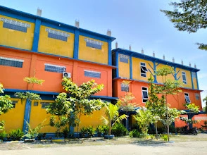

Sejarah IASI
berdiri berdasarkan SK Kemdiktisaintek RI Nomor 802/B/O/2025 tanggal 5 Agustus 2025.

Visi & Misi IASI
Menjadi Institut yang unggul, Islami, dan berdaya saing di tingkat nasional pada tahun 2045.

Akreditasi
Mutu penjaminan pendidikan Institut Asyifa Indonesia yang terdaftar resmi di BAN-PT & LAM-PTKes.